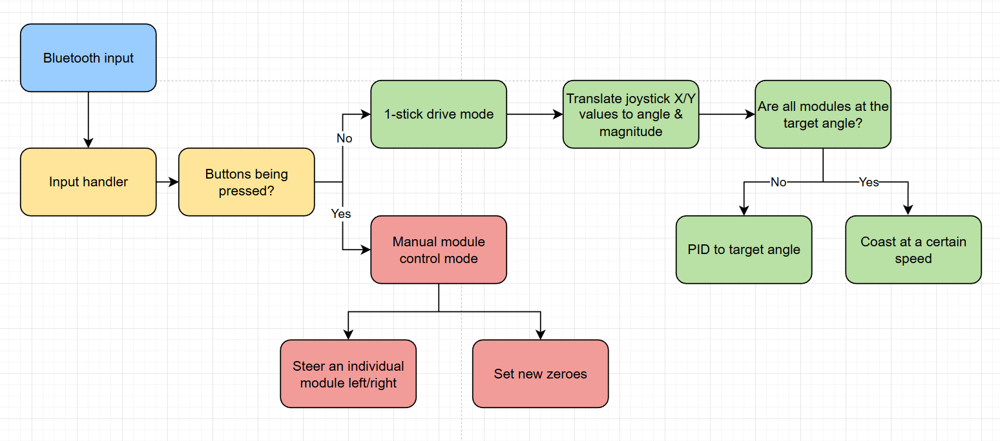
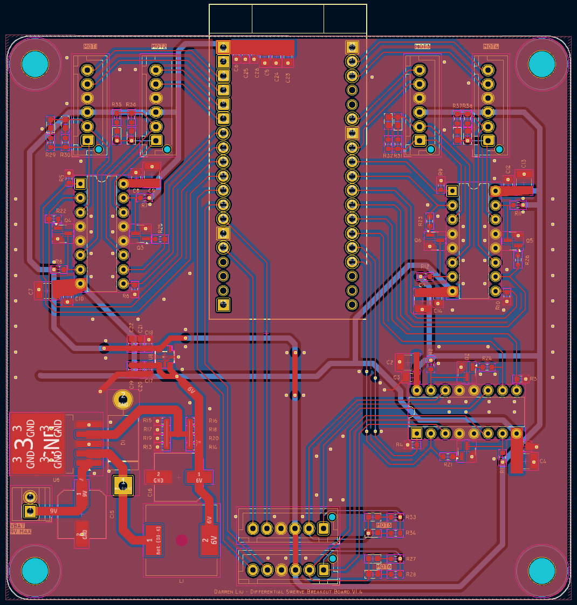
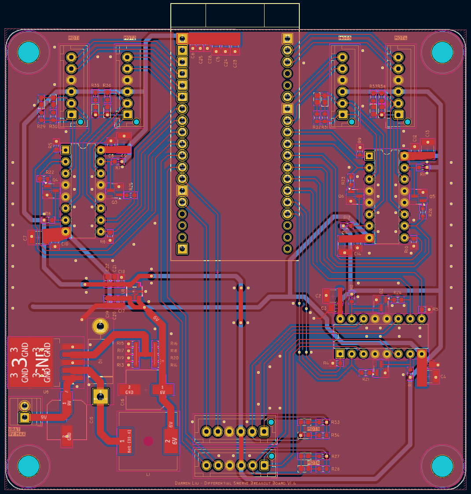

Differential Swerve Drivetrain
After finishing all of the controls for the single swerve module, I decided to design a full swerve drivetrain with three modules.
So this project is basically
my differential swerve modulex3!
Driving Demo

Software
See the code!The revamped module code is based off of the classes written in my differential swerve module project, with changes to the motor PID. The software instantiates three module objects and controls them based on feedback from a bluetooth controller.


The swerve drive is controlled with one joystick that dictates steering + speed using the joystick angle and depth.
Breakout PCB
I designed a custom breakout PCB that features signal filtering and power management.

Features:
- Phase-enable drive for 6 motors using L293D H-Bridges and MOSFET inverters
- Buck converter setup to step 9V down to 6V + 3.3V LDO regulator
- Onboard status LED's
Being my very first functional PCB design, I learned a lot about how to route power, decoupling, and what types of connectors to use.
The PCB took many iterations until it fully worked, the final version features an integrated step down converter, status LEDs, and the aforementioned motor drivers.
 

One of the biggest challenges with this project was GPIO pin allocation. For this project I barely got away with 24 GPIO pins. I ended up driving each motor with phase-enable control using an H-Bridge and MOSFET inverter. This lowered the total number of signal pins needed for each of the 6 motors from 3 to 2.